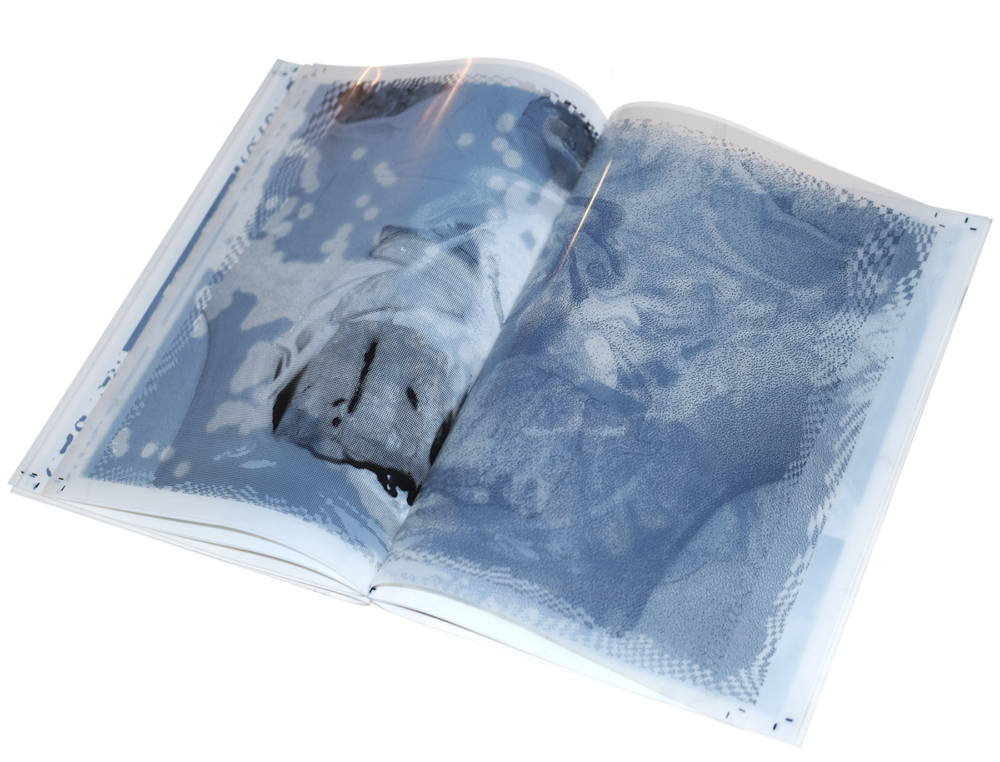
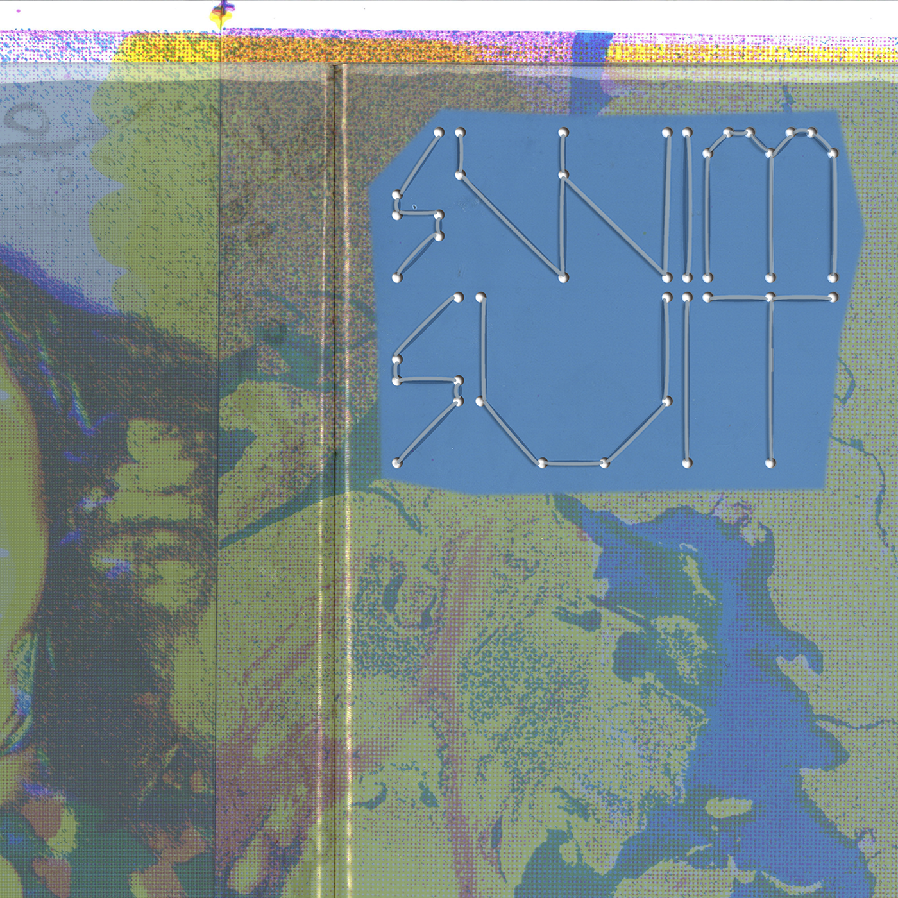
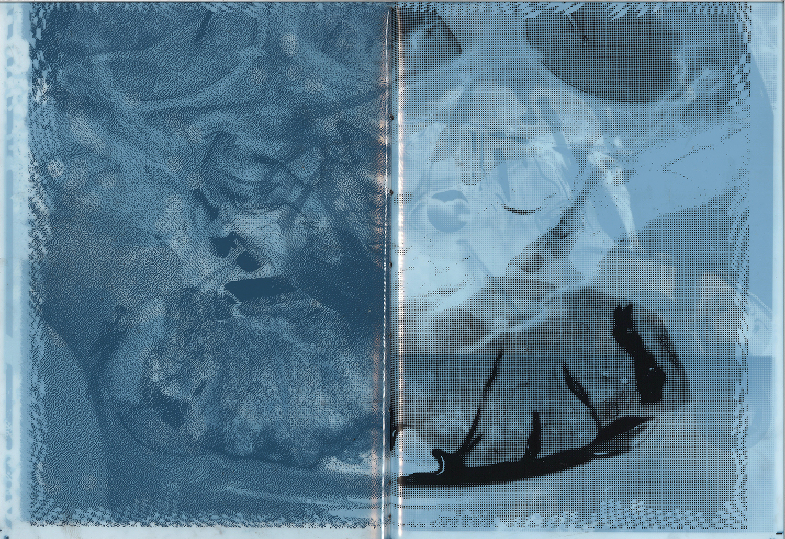
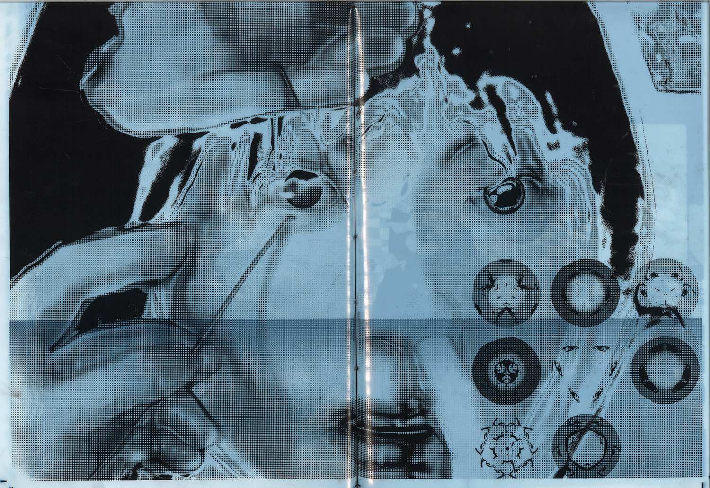
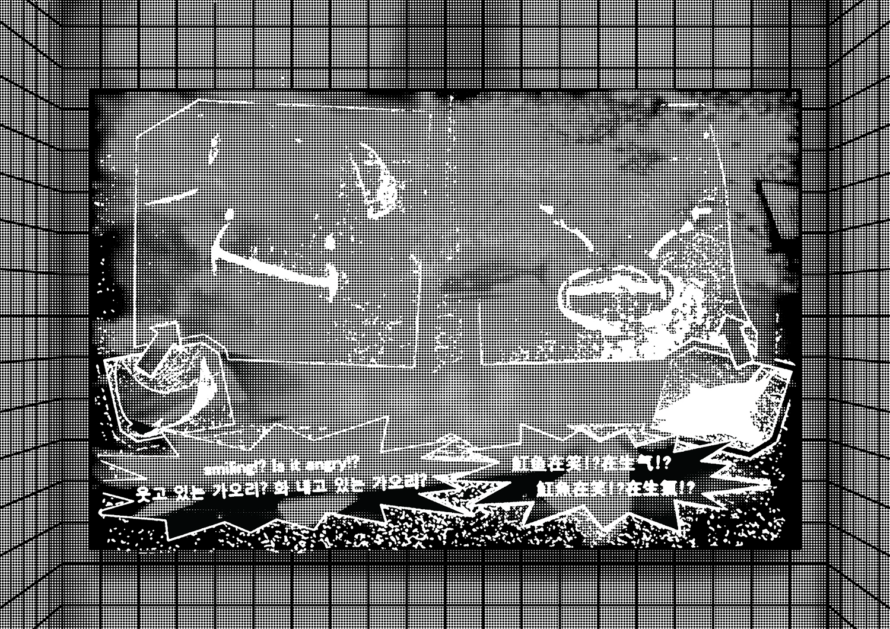
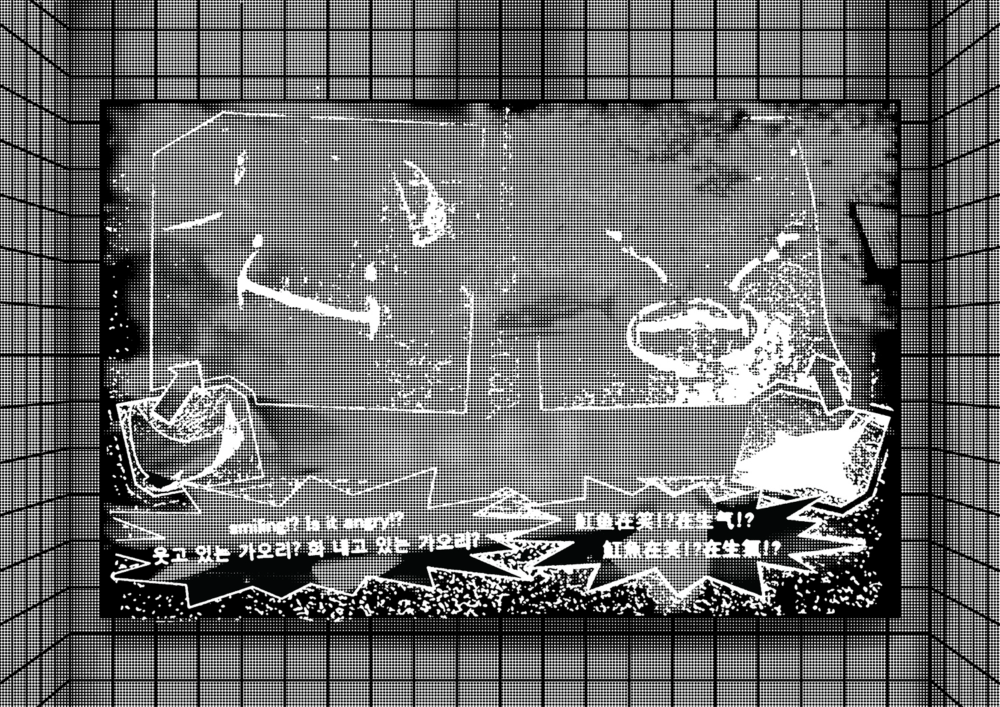
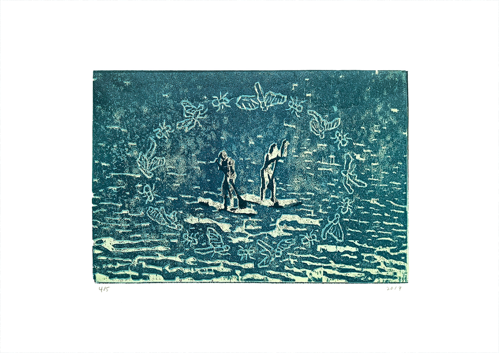
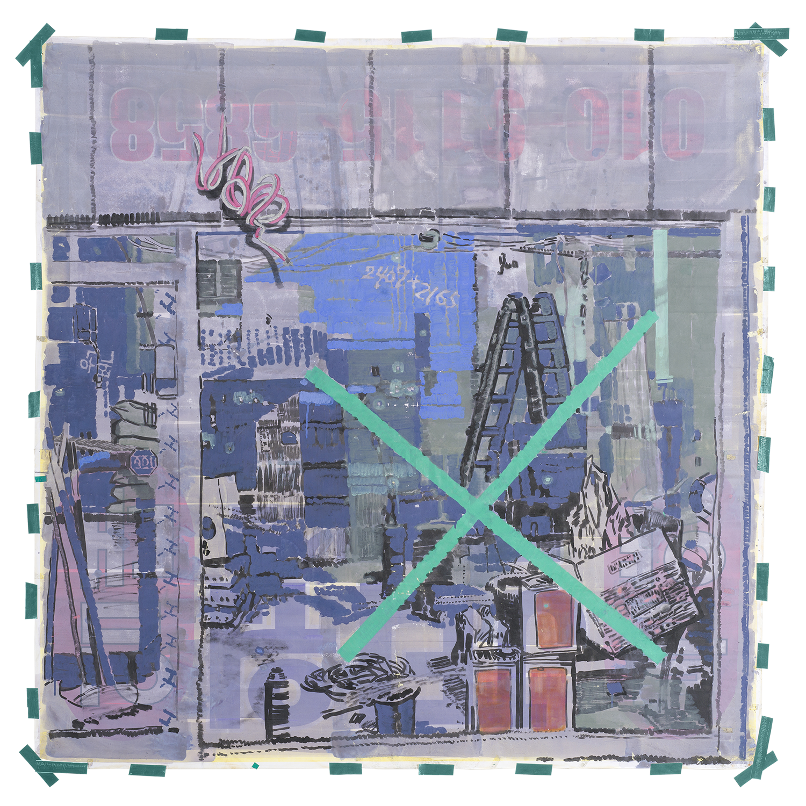

Q. 이전에 했던 작업을 보여줄 수 있나요?
A. 저번에 어디 제출하느라 만들어놓은 포트폴리오가 있어요. 여기에 지난 학기 인쇄기반 그래픽 수업 결과물을 좀 보완해서 실었어요.
 Swimsuit. 2020.그때 실크 인쇄를 했는데 아쉬운 점이 많았어요. 사이즈도 그렇고, 색깔도 그렇고.... 종이도 아트지에 실크 인쇄를 하니까 잉크가 끈적거려서 종이를 펼칠 때마다 ‘찌지직’ 소리가 나더라고요. 그래서 저는 필름 위에 다시 디지털 인쇄를 해서 한 권 더 만들었어요. 이렇게 하니까 레이어가 잔상처럼 보이는 게 좋더라고요. 이 책을 포트폴리오에 메인으로 실었고, 이 외에도 옛날에 했던 페인팅을 담았어요.
Swimsuit. 2020.그때 실크 인쇄를 했는데 아쉬운 점이 많았어요. 사이즈도 그렇고, 색깔도 그렇고.... 종이도 아트지에 실크 인쇄를 하니까 잉크가 끈적거려서 종이를 펼칠 때마다 ‘찌지직’ 소리가 나더라고요. 그래서 저는 필름 위에 다시 디지털 인쇄를 해서 한 권 더 만들었어요. 이렇게 하니까 레이어가 잔상처럼 보이는 게 좋더라고요. 이 책을 포트폴리오에 메인으로 실었고, 이 외에도 옛날에 했던 페인팅을 담았어요.
Surf With Insects. 순지에 목판화. 2019. Bubble Double Combo. 장지에 채색. 2019.제가 전에 한강에 작업실이 있었거든요. 어떤 공모에 당선이 됐는데 거기서 한강공원 안에 있는 컨테이너를 작업실로 줬어요. 그 작업실 가는 길에 ‘한강 부동산’ 같이 한강을 소재로 한 많은 것들이 있었는데 그런 도상을 찍어놓고 이걸 재료로 페인팅을 했어요. 학교에서 전시도 했고요. 이게 그 컨테이너 작업실 벽이었어요. 이 작업도 두 번 나눠서 찍고 이어붙였어요. 한 번에 찍으면 왜곡이 있으니까.
Bubble Double Combo. 장지에 채색. 2019.제가 전에 한강에 작업실이 있었거든요. 어떤 공모에 당선이 됐는데 거기서 한강공원 안에 있는 컨테이너를 작업실로 줬어요. 그 작업실 가는 길에 ‘한강 부동산’ 같이 한강을 소재로 한 많은 것들이 있었는데 그런 도상을 찍어놓고 이걸 재료로 페인팅을 했어요. 학교에서 전시도 했고요. 이게 그 컨테이너 작업실 벽이었어요. 이 작업도 두 번 나눠서 찍고 이어붙였어요. 한 번에 찍으면 왜곡이 있으니까.
X. 현수막에 채색, 테이프, 2017.
이 작업을 좋아해요. 실제 현수막에 그린 그림인데, 원단이 코팅이 되어있다 보니까 물감이 다 떨어지더라고요. 보관을 할 수가 없어서 정말 기록물로써의 작업이 되어버렸어요. 실물은 거의 훼손되어 있어요.
일러스트레이터가 될 생각은 없었어요?
일러스트레이터도 재미있을 것 같은데, 일러스트레이터는 데이터를 주고받는 일을 하게 되잖아요. 근데 저는 인쇄에 더 관심을 가졌던 것 같아요. 근데 또 사람이 좋아하는 거랑 하고 싶은 거랑 잘하는 거랑 다르니까. 솔직히 저는 책 디자인을 해서 돈을 벌 수 있을 거라는 기대는 없고요. 결국 이미지를 만들어서 돈을 벌게 되지 않을까.... 그래서 일러스트도 공부해야겠다고 생각하긴 해요. 근데 이 작업을 보고 일러스트레이터가 생각났다는 게 신기하네요. 이거 했을 때 저는 별 생각이 없었는데 픽셀 같다는 얘기가 나오긴 했어요.